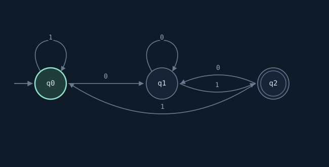

Create and inspect
Edit machines, select diagram states, query individual transitions, and switch to a table when you want every rule in view.
JAVASCRIPT · INTERACTIVE AUTOMATA
Define a machine. Follow every transition.
An ongoing independent project that started with my JavaScript logic for deterministic finite automata and string operations. The browser workspace turns those definitions into machines you can build, inspect, test, and combine. DFA features are available now; NFA and GNFA support are planned.
FROM DEFINITION TO BEHAVIOR
Create a DFA by defining its states, alphabet, start state, accepting states, and complete transition table. The same definition drives the diagram, transition table, and simulations.
Edit machines, select diagram states, query individual transitions, and switch to a table when you want every rule in view.
Check acceptance and the final state. Play the trace or move through it one symbol at a time. Batch tests compare several inputs.
Use union to accept strings recognized by either machine, or intersection to require both. Complement reverses acceptance over a machine’s alphabet. Binary operations require equal alphabets.
Machines save in your browser. Export machine or workspace JSON for a portable copy, or download a diagram as SVG.
String tools also expose the model’s prefix, suffix, and unique-substring operations. Results can be explored alongside the active machine.
READY MACHINES
The example library provides three starting points. Load one, test it, then change its definition to see how its behavior changes.

STILL UNDER DEVELOPMENT
The live workspace currently supports deterministic machines. NFA and GNFA features will follow as I develop the model further.
EXPLORE & RUN